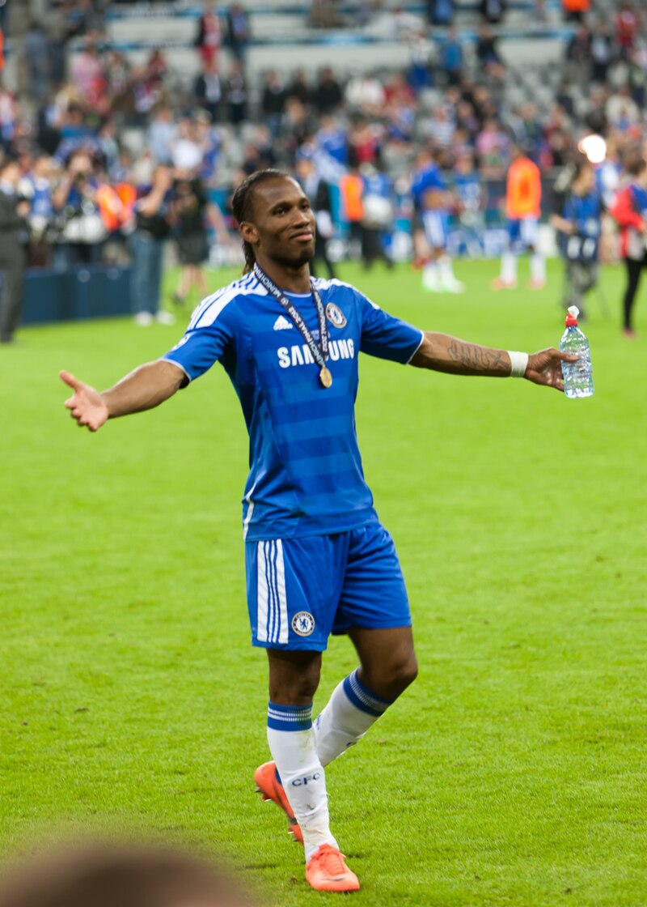

.jpeg)
Signing for Chelsea in July 2004 for £24 million, Drogba scored in his third game for the club with a header against Crystal Palace. His season was interrupted when he pulled a stomach muscle against Liverpool which kept him out of action for over two months.
Chelsea won the Premier League, only their second English top-flight championship and their first in 50 years, and the League Cup. Later, Drogba scored in extra time in a 3–2 final win against Liverpool at the Millennium Stadium, as well as reaching the semi-finals of the Champions League.
Drogba scored a somewhat disappointing 16 goals in a total of 40 games for Chelsea in his first season: ten in the Premier League, five in the Champions League and one in the League Cup final.
Drogba started the 2005–06 season by scoring two goals in a Community Shield win over Arsenal. His reputation was marred amidst accusations of cheating during Chelsea's 2–0 win over Manchester City.
Replays showed that he had used his hand to control the ball before scoring the second of his two goals.This occurred just a week after a similar incident against Fulham where the goal was disallowed.
Chelsea went on to retain the league title with two games to play, becoming only the second club to win back-to-back English titles in the Premier League era. Again Drogba finished with 16 goals for the season, 12 in the Premier League, two in the Community Shield, one in the Champions League and one in the FA Cup.
After the departure of Damien Duff to Newcastle United, Drogba switched from the number 15 shirt he had worn for Chelsea since 2004 to the number 11 shirt vacated by Duff. Drogba scored 33 goals in all competitions during the season (more than his tally in the previous two seasons combined), including 20 in the Premier League to win the Golden Boot.
In doing so, he became the first Chelsea player since Kerry Dixon in 1984–85 to reach 30 goals in a season, scoring 20 in the Premier League, six in the Champions League, three in the FA Cup and four in the League Cup.
Among the highlights were scoring game-winners from outside the penalty area against Liverpool, Everton (from 35 yards out) and Barcelona, a 93rd-minute equaliser against Barcelona at the Camp Nou and both Chelsea's goals in their 2–1 League Cup final win over Arsenal. His goal against Liverpool saw him control the ball on his chest with his back to goal, before hitting a 20-yard half-volley on the turn.
Liverpool defender Jamie Carragher who was closely marking Drogba said,"There's not a lot you can do in certain situations because they were that good." He also completed two hat-tricks; one against Watford and the other against Levski Sofia in the Champions League, Chelsea's first hat-trick in European competition since Gianluca Vialli in the Cup Winners' Cup in 1997.
In his last competitive game that season, he scored the winning goal against Manchester United in the first FA Cup final at the new Wembley Stadium. This also meant he became the only player to score in both English domestic finals in the same season and win both.
In January 2007, Drogba was named the Ivorian Player of the Year, ahead of Kader Keïta, Aruna Dindane, and Kolo Touré. In March, he was named African Footballer of the Year for the first time, ahead of Samuel Eto'o and Chelsea teammate Michael Essien.
His performances during the season saw him named in the PFA Premier League Team of the Year and runner-up to Cristiano Ronaldo in the PFA Player of the Year awards.
Drogba faced problems off the pitch during the end of the season as his transfer from Marseille to Chelsea in July 2004 came under scrutiny. The Stevens inquiry in June 2007 expressed concerns because of the lack of co-operation from agents Pinhas Zahavi and Barry Silkman.
The 2007–08 season began badly for Drogba as he expressed his doubts about the departure of manager José Mourinho. He was reportedly in tears when Mourinho told him he was leaving the club, and said "Mourinho's departure destroys a certain familiarity we had at the club.
Many of us used to play first and foremost for the manager. Now we need to forget those feelings and find another source of motivation". Following these claims, Drogba told France Football magazine "I want to leave Chelsea. Something is broken with Chelsea, The damage is big in the dressing room".
Despite having signed a four-year contract with the club in 2006, Drogba reportedly pointed out several favoured clubs in the interview, identifying Barcelona, Real Madrid, A.C. Milan or Inter Milan as possible future destinations, he later admitted he regretted this and was 100% committed to Chelsea.
Drogba made it up to the fans by scoring in Chelsea's 2–0 victory over Middlesbrough on 20 October 2007, against Schalke 04 in the Champions League four days later, and two goals against Manchester City. In December 2007, Drogba was voted fourth (after Kaká, Lionel Messi and Cristiano Ronaldo) for the 2007 FIFA World Player of the Year.
Drogba continued scoring goals but suffered an injury at the training ground and decided to have an operation on his knee.
He was unable to play for four weeks and missed key games against Valencia, Arsenal and Liverpool. Drogba returned from injury to play in an FA Cup third round match against Queens Park Rangers and wore the captain's armband for the last 30 minutes he was on the pitch, but that was his last performance for Chelsea before international duty at the Africa Cup of Nations.
Upon his return, Drogba scored a goal in the 2008 League Cup Final, making him the all-time leading scorer in League Cup Finals with four goals, but could not help prevent Chelsea fall to a 2–1 defeat at the hands of Tottenham Hotspur. He scored both goals in a key 2–1 victory against Arsenal on 23 March 2008, bringing Chelsea equal on points with leaders Manchester United.
While playing against Norwich City on 27 August 2011, Drogba suffered a concussion in a collision with Norwich goalkeeper John Ruddy. After missing two games, Drogba made his return to the Chelsea squad on 24 September against Swansea City. Drogba went on scoring his first goal of the season in a 4–1 win.
On 29 November, Drogba rejected a new deal with Chelsea and was set to sign for the highest bidder. On 31 December 2011, Drogba scored his 150th goal for Chelsea against Aston Villa, putting him level with Peter Osgood and Roy Bentley in terms of the club's top scorers of all time.

Even though, Chelsea was leading with the penalty scored by Drobga, the game ended in a 3–1 loss for Chelsea.Drogba scored his 99th Premier League goal for Chelsea on 25 February 2012, in a 3–0 win over Bolton Wanderers.
Drogba scored his 100th Premier League goal for Chelsea on 10 March 2012, in a 1–0 win over Stoke City. He is the first African player to reach that landmark.
Drogba scored his seventh goal at Wembley Stadium against London rivals Tottenham Hotspur on 15 April, blasting the ball past former teammate Carlo Cudicini as Chelsea became 5–1 winners and secured a place in the FA Cup Final against Liverpool.[104] Three days later, he scored a vital goal as Chelsea beat Barcelona 1–0 at Stamford Bridge in the first leg of their UEFA Champions League Semi-final clash.
Drogba became the first player to score in four different FA Cup Finals, as he netted the winner in Chelsea's 2–1 triumph over Liverpool on 5 May. Drogba also holds the record for most goals scored at the new Wembley Stadium with eight.
In the Champions League final on 19 May 2012, Drogba scored the equaliser from Juan Mata's corner in the 88th minute, taking Chelsea into extra time and then penalties. He also scored the winning penalty in the 4–3 penalty shootout that led Chelsea to the victory over Bayern Munich. Sir Alex Ferguson remarked: "As far as I was concerned, he [Drogba] won the Champions League for Chelsea.
" Drogba's headed effort marked his ninth goal in nine cup final appearances for Chelsea, Chelsea legend Gianfranco Zola spoke after the match about Drogba's ability in big games: "In all their very important matches he has put a stamp on it." In November 2012, Drogba was named Chelsea's greatest ever player in a poll of 20,000 fans conducted by Chelsea FC Magazine.